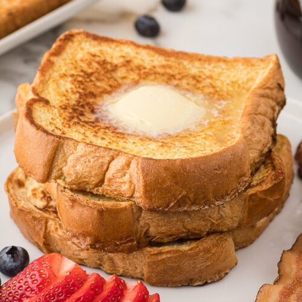

French Toast

Description
Plain white bread is transformed into this delicious breakfast staple in just a few quick
and easy steps. Quick and easy french toast is a breakfast classic recipe that everyone
should have in their repertoire.
Many folks hear “french” and are quickly intimidated that the recipe must be incredibly
complicated and difficult. Nothing could be further from the truth. When you make it once
you’ll realize just how easy french toast is to make you’ll never be intimidated at the
prospect again.
Ingredients
- Sliced Bread
- Eggs
- Milk
- Powdered Sugar
- Vanilla Extract
Steps
- In a large bowl whisk together eggs, milk and vanilla extract. Be sure to whisk well.
- Preheat a frying pan, skillet or griddle on medium heat. Use cooking spray or a pat of butter.
- Dunk bread slices in egg mixture. If using regularly sliced bread, don’t soak the bread – just a quick dunk.
- Place bread on griddle and cook on both sides until golden brown. It should take about 2 minutes per side but be SURE to check.
- Place on plate and sprinkle on some of the powdered sugar.
Recipe found from
Easy Recipe Depot.
Back to Homepage